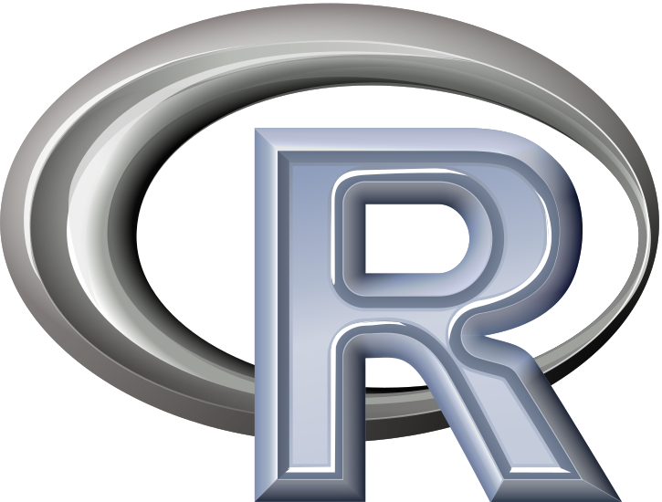

Why

Presented by: Andy Choens, MSW
Two URLs To Remember:
Bad Reasons To Learn / Use R
- Some guy with a beard likes it.
- Someone on the Internet said it was great.
- You read about it somewhere.

Good Reasons to Learn / Use R

- Ecosystem
- Literate Programming
- Open Source
- Future Opportunities
- Don't Take My Word For It
Ecosystem
Packages

Source: r4stats.com/articles/popularity/
Diverse Examples
kobe-package |
ChIPpeakAnno |
| The tuna Regional Fisheries Management Organisations (tRFMOs) use a common framework for providing scintific advice, i.e. the Kobe II Framework. This is based on maintaining fishing mortal- ity below FMSY and stock biomass above BMSY. This package provides methods for summarising results from stock assessments and Management Strategy Evaluations in the Kobe format. | The package includes functions to retrieve the sequences around the peak, obtain enriched Gene Ontology (GO) terms, find the nearest gene, exon, miRNA or custom features such as most conserved elements and other transcription factor binding sites supplied by users. Starting 2.0.5, new functions have been added for finding the peaks with bi-directional promoters with summary statistics (peaksNearBDP), for summarizing the occurrence of motifs in peaks (summarizePatternInPeaks) and for adding other IDs to annotated peaks or enrichedGO (addGeneIDs). This package leverages the biomaRt, IRanges, Biostrings, BSgenome, GO.db, multtest and stat packages. |
| Source: cran.r-project.org | Source: bioconductor.org/ |
Integration
Programming Languages
- C
- Java
- JMP
- Mathematica
- MATLAB
- Python
- SAS
- SPSS
- Statistica
- tableau
Database
Vendors
- Hadoop
- Oracle
- PostgreSQL
- Vertica
Business Intelligence
- Alteryx
- Jaspersoft
- Oracle Business Intelligence Enterprise Edition
- Pentaho
- SAP (and SAP HANA)
Interface Choices
{kind=link}
{kind=link}
{kind=link}
{kind=link}
Interface - RStudio
Interface - ESS
Literate Programming
Literate Programming
Examples
Open Source
Free as in freedom, not beer.
Open Source Is Everywhere:
FOSS: |

|
|

|
| Filezilla | Adium | Java | |
Based On: |
|
|

|
| Chrome | Safari | Android | |
Even @ DOH:
FOSS: |
|
||
| Filezilla | SQL Workbench/J | 7-Zip | |
Based On: |

|
|
|
| Vertica | SAS | ||
Why?
The Four Freedoms
- The freedom to run the program for any purpose.
- The freedom to study how the program works, and change it to make it do what you wish.
- The freedom to redistribute copies so you can help your neighbor.
- The freedom to improve the program, and release your improvements (and modified versions in general) to the public, so that the whole community benefits.
The Four Freedoms: Analytics Style
- The freedom to run the analysis for any purpose.
- The freedom to study how the analysis works, and change it to make it do what you wish.
- The freedom to redistribute copies so you can help your neighbor.
- The freedom to improve the analysis, and release your improvements (and modified versions in general) to the public, so that the whole community benefits.
Future Opportunities
Accelerating Growth
Indeed.com
R
!"R D" !"A R" !"H R" !"R N" !toys !kids !" R Walgreen" !walmart !"HVAC R" !"R Bard"
and ( "biostatistics" or "data analysis" or "data analyst"
or "epidemiologist"
or "healthcare analysis" or "healthcare analyst"
or "statistical"
)
,SAS
!"system administrator" !"school age" !sata !firmware !scsi !raid !samsung !scandinavian !sonar !nurse
and ( "biostatistics" or "data analysis" or "data analyst"
or "epidemiologist"
or "healthcare analysis" or "healthcare analyst"
or "statistical"
)